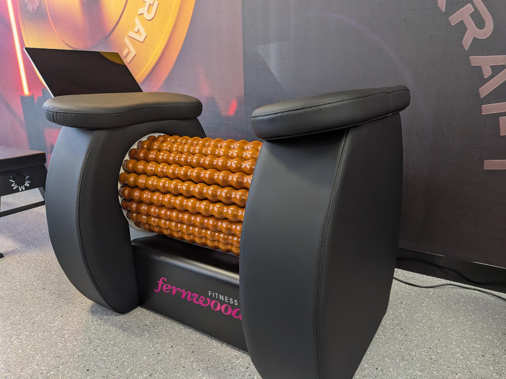
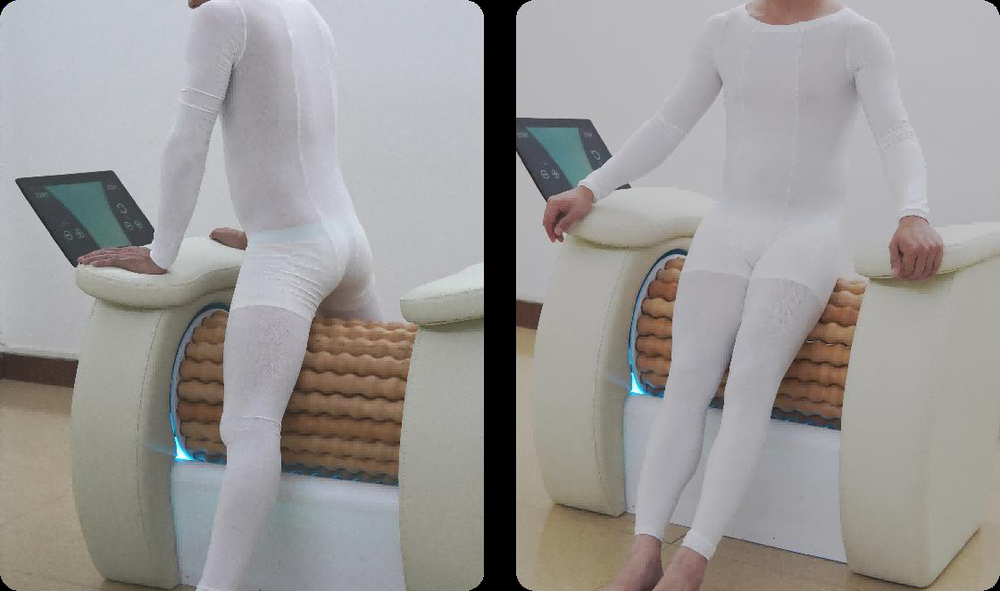
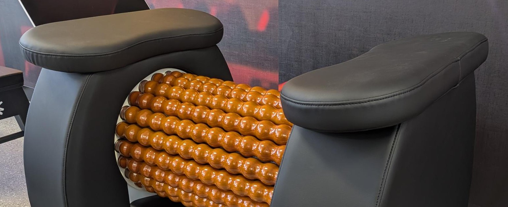
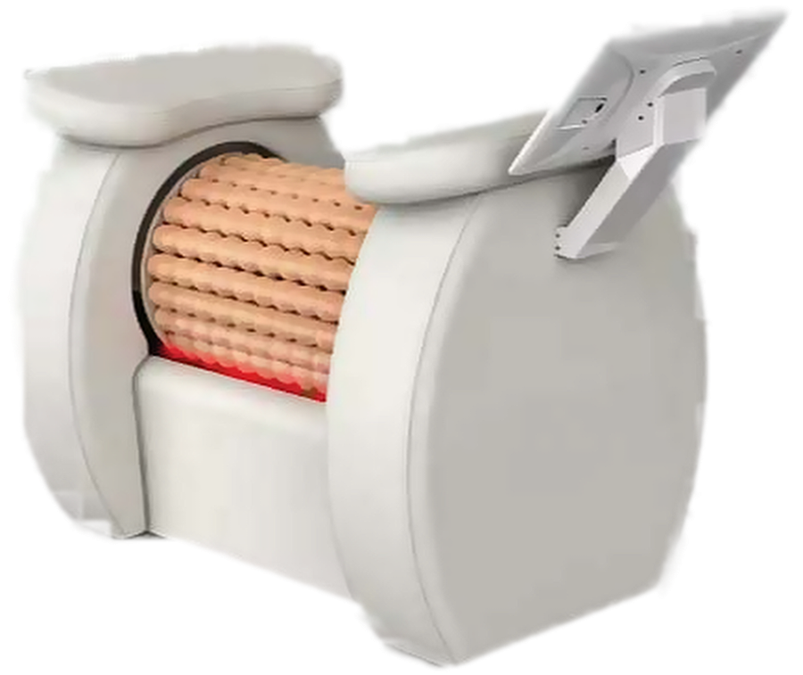
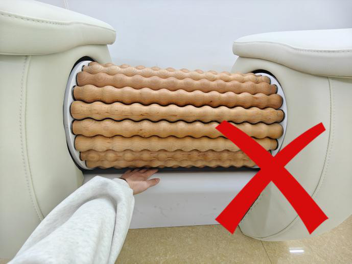
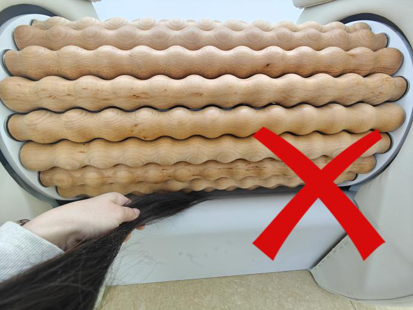

A motorised infrared roller bed for gyms that want recovery to be a room rather than a corner. Hands-free, touchscreen controlled, built for commercial floors.

Recovery has moved from the stretching mat to the membership tier. The Recovery Roller is commercial gym equipment for that room: one machine, one footprint, no therapist required.
Across the big networks, recovery now sits behind the top membership rather than alongside it. Members are choosing it and paying for it.
A mat, two foam rollers and whatever was left in the fitout budget. It is the most asked-about part of a floor and the least specified.
Consumer products built for a lounge room on one side, fleet contracts built for national chains on the other. Very little engineered as commercial gym equipment.

The member stands, leans or sits against the roller drum and the motor does the rest. Nobody gets down onto the floor and back up again, and nobody needs to hold a device.
Speed, direction and session time are set on the touchscreen. Staff set a program once; members run it themselves.

Multiple rollers with a raised, nodular profile turn together inside the drum, working a wide contact area at once.
Rollers run in either direction at multiple speeds, so one machine covers arms, legs, back, sides and glutes.
Speed, direction and timer on one screen, with the session ending automatically when the time is up.
Infrared heat is built in beneath the rollers, warming the muscles as they are worked. It can be switched off from the screen.
Upholstered, scratch-resistant shell with padded arm rests to brace against. Wipe-clean finish in colours to suit the room.
Housing colour and branding can be specified for networks and franchise groups, as on our showroom unit.

Specifications are the manufacturer's and may change without notice. Confirm with MasterKraft before planning a room.
Start every new user on the lowest speed and step up from there. Rollers always work toward the centre of the body: limbs toward the torso.
| Area | Time | Rotation & direction | Notes |
|---|---|---|---|
| Arms | 5–6 min / side | Clockwise, wrist toward shoulder | Forearm, then upper arm. Keep clear of the armpit. |
| Calves | 8–10 min / side | Clockwise, ankle toward knee | Roll in sections, 3–5 passes each. |
| Thighs | 8–10 min / side | Clockwise, knee toward hip | Roll in sections, 3–5 passes each. |
| Glutes | 8–10 min | Anticlockwise, upper thigh toward waist | Very light pressure. |
| Waist sides | 8–10 min | Clockwise, hip toward lower ribs | Muscles either side of the spine only. Very light pressure. |
| Abdomen | 5–8 min | Clockwise around the navel | Gentle pressure. Not within an hour of a meal. |
| Back | 8–10 min | Anticlockwise or alternating, low to high | Either side of the spine, never on it. |
Keep the area in full, even contact with the rollers. The feeling should be a firm roll, never forced pressure.
Keep the body moving along the rollers; do not hold one spot for long.
Stay off bony points: kneecaps, spine, hip bones and collarbones.
Stop straight away if anything stings, reddens badly or hurts, then lower the speed.
For sensitive areas, turn the infrared heat off or reduce the speed.
One user at a time. Not for use by anyone under 18.


Ask every new user. If any of these apply, they should not use the machine without clearance from their doctor.
Pregnant or breastfeeding; menstruating (abdomen only).
Broken, infected or inflamed skin, open wounds or recent injury in the area.
Serious heart or circulatory conditions, uncontrolled high blood pressure, bleeding disorders or blood thinners.
Pacemakers, metal stents, prostheses or other implants; cancer.
Blood clots, varicose veins in the area, or active lymphatic conditions.
Fever of 38°C or more, an active infection, or severe weakness or anaemia.
Advanced osteoporosis, diabetes with nerve damage, or very low tolerance to pressure.
Sensitive, thin or keloid-prone skin, or allergy to the contact materials.
Surgery, liposuction or injectables in the area in the last 3 months; fillers or botulinum toxin in the last 6.
Less than 3 months after a vaginal birth or 6 months after a caesarean.
Undiagnosed lumps, cysts or nodules in the area.
Abdomen: within an hour of alcohol, or when very hungry or very full.
Do not use alongside high-frequency or RF devices on the same area.